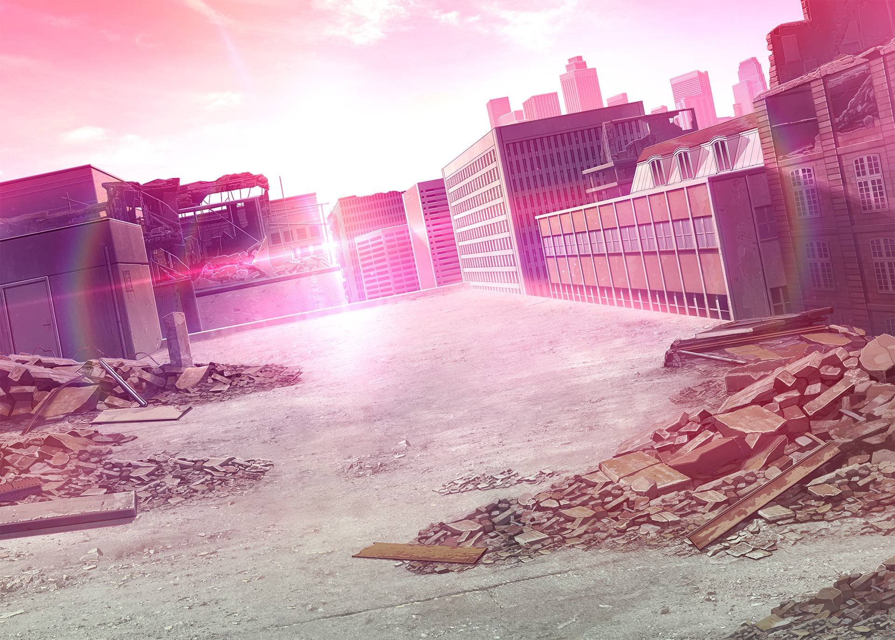

Latar Konflik · II

Perang adalah sebuah akar dari rantai kebencian. Patriotisme dan rasa sakit ditinggalkan orang terdekat merupakan bubuk mesiu yang paling efektif, massa serta media ibarat kerangka penopang, dan pemerintahlah yang punya kontrol terhadap pelatuk.
Gerakan separatis, terorisme, grup2 radikal menggumpal di Frost Neutral Territory — belum lagi diktatorat dan rasisme yang menjadi pemandangan sehari2 — membuat latar VN ini seolah olah bom yang bisa meledak kapanpun.